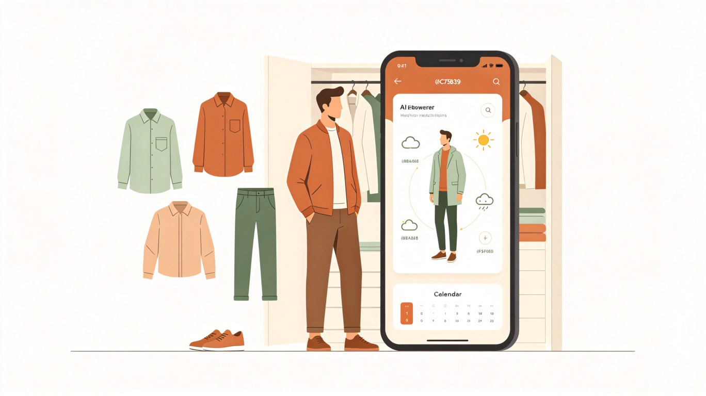
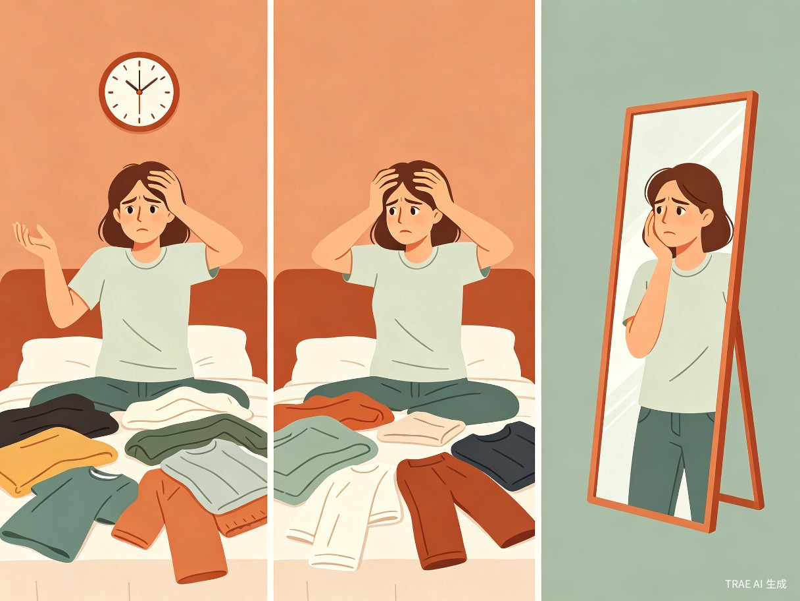
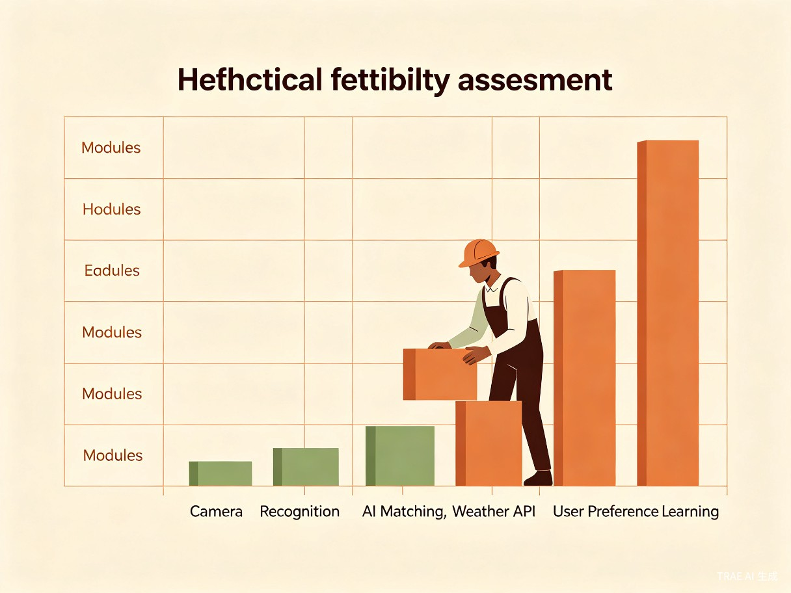
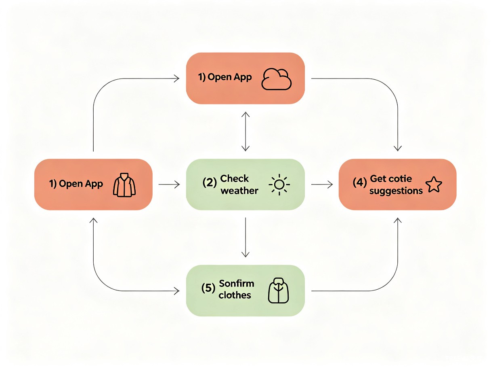

AI 穿搭助手
一个懂你的私人穿搭助手 —— 每天早上3分钟，告别穿搭纠结，从容出门
痛点分析
每天早上站在衣柜前发呆，不知道穿什么——这是无数职场人每天都在经历的小型"决策灾难"。表面上看只是选衣服，实际上它牵扯出三个层层递进的困扰。

| 痛点层级 | 具体表现 | 深层原因 |
|---|---|---|
| 决策疲劳 | 每天早上站在衣柜前发呆，不知道穿什么 | 衣物信息未数字化，靠大脑记忆检索效率极低 |
| 时间成本 | 思考穿搭导致上班迟到，或提前一晚焦虑 | 缺乏快速、可靠的搭配建议来源 |
| 效果不确定 | 潦草穿搭出门后后悔，或搭配不协调 | 没有基于天气、场合、个人风格的智能推荐 |
核心矛盾在于：人们希望穿搭得体，但不愿意为此付出大量认知资源和时间成本。这个矛盾正是AI穿搭助手要解决的根本问题。
创意背景
社会趋势
"精致懒"正成为年轻职场人的主流生活方式——追求生活品质，但拒绝繁琐流程。短视频和社交平台放大了"穿搭焦虑"，人们更在意日常形象管理。与此同时，可持续时尚兴起，"一衣多穿""胶囊衣橱"概念流行，对搭配能力提出了更高要求。
技术可行性
图像识别技术已经成熟，可以自动识别衣物类别、颜色、款式。大语言模型能够理解自然语言描述（如"今天有重要会议，要正式但不沉闷"）。天气API、日历API等数据接口丰富，可以整合多维信息做推荐。
市场空白
现有穿搭App（如小红书、穿搭类小程序）以内容浏览为主，缺乏"个人衣橱 + 智能推荐"的闭环。大多数工具没有结合天气、日程等动态因素，缺少真正"一键出方案"的极简体验。
产品类型
建议采用微信小程序形态，而非独立App。小程序无需下载、扫码即用，降低了用户的尝试成本。早上出门前的决策场景天然适配手机入口，且小程序易于分享搭配方案到朋友圈或群聊，形成社交传播。对于比赛作品而言，开发周期也更短。
核心功能架构
衣橱数字化
拍照上传衣物，AI自动识别类别、颜色、季节属性，建立个人数字衣橱
智能搭配引擎
输入今日场景/天气/心情，AI生成1-3套搭配方案，附搭配理由
一键穿搭日历
提前规划一周穿搭，减少每日决策负担
穿搭记录与反馈
记录每天实际穿搭，通过用户反馈学习个人偏好
差异化定位：不是"教你穿搭的社区"，而是"帮你做决策的私人穿搭助手"——强调省时、省心、个性化。
目标用户
| 用户分层 | 画像描述 | 核心诉求 | 使用频率 |
|---|---|---|---|
| 核心用户 | 25-35岁一二线城市职场白领，女性为主 | 每天早上快速获得得体搭配，避免迟到 | 每日高频 |
| 次要用户 | 大学生 / 初入职场年轻人，开始注重形象 | 学习搭配逻辑，建立个人风格 | 每周数次 |
| 潜力用户 | 对穿搭无感但被迫需要穿搭的男性群体 | 极简操作，"告诉我穿什么就行" | 不定期 |
典型用户故事：小林，28岁，互联网公司产品经理。每天早上8点起床，8:40必须出门。她希望用3分钟搞定穿搭，但衣柜里衣服不少，总是纠结。她需要的是一个"懂她"的工具——知道今天北京15度有风、下午有客户会议、她最近偏爱浅色系——然后直接告诉她："穿米色风衣 + 白色衬衫 + 深蓝牛仔裤 + 小白鞋"。
目标场景
| 场景 | 触发时机 | 用户行为 | 产品响应 |
|---|---|---|---|
| 晨间决策 | 早上起床后，打开衣柜前 | 打开小程序，查看今日推荐 | 基于天气 + 日历 + 历史偏好，推送搭配方案 |
| 睡前规划 | 晚上睡前，准备第二天衣物 | 浏览明日穿搭预览 | 展示搭配方案，支持一键预约提醒 |
| 换季整理 | 季节交替，衣橱大整理 | 批量上传 / 整理衣物 | 提供衣橱统计，识别缺漏单品 |
| 购物决策 | 逛街 / 网购时犹豫是否购买 | 拍照上传，询问"这件适合我吗" | 结合现有衣橱，给出购买建议和搭配方案 |
| 特殊场合 | 面试、约会、婚礼等 | 输入场合需求 | 生成场合专属搭配方案 |
最核心场景是"晨间决策"——痛点最强烈、使用频率最高、产品价值最直接的场景。MVP阶段应聚焦于此。
产品价值
用户价值
每天节省10-15分钟穿搭决策时间，降低决策焦虑；提升穿搭满意度，增强自信；通过记录和反馈，逐渐形成个人风格认知
商业价值
精准穿搭推荐可导向电商导购；品牌合作推广；高级功能订阅（如无限衣橱容量、更多搭配方案）
社会价值
推动"一衣多穿"的可持续时尚理念，减少冲动消费和衣物浪费；帮助穿搭困难群体建立自信
创意逻辑薄弱点分析
再好的创意也需要经受逻辑推敲。以下是这份方案中三个最需要警惕的薄弱环节，以及对应的修正思路。
薄弱点一：衣橱数字化的冷启动门槛被严重低估
用户需要把衣柜里的衣服一件件拍照上传，AI才能推荐。一个普通职场人的衣橱可能有50-150件衣物，全部数字化需要数小时。用户因为"懒得想穿搭"而来，产品却先要求用户做一件更繁琐的事——这就是"先有鸡还是先有蛋"的困局。没有数据就无法推荐，但没有推荐用户就没有动力录入数据。
MVP替代方案：放弃"全衣橱数字化"，改为"每日拍照3分钟"模式——用户每天早上只拍今天想穿的几件，AI基于这几件做搭配建议。或者采用"虚拟衣橱"：提供常见衣物模板库，用户勾选自己有的款式，5分钟完成初始化。
薄弱点二：AI搭配推荐的"审美可信度"存疑
穿搭是高度主观、文化依赖的审美行为。AI生成的搭配方案可能技术上"合理"（颜色不冲突、风格统一），但用户可能觉得"不适合我"。大模型训练数据偏向网络图片，不一定匹配真实日常穿搭场景。个人审美偏好也难以用结构化数据表达。一次失败的推荐就会摧毁用户信任。
MVP替代方案：推荐逻辑改为"基于规则的筛选 + 用户微调"，而非纯AI生成。先按天气/场合过滤，再从用户历史"收藏"的搭配中推荐相似组合。引入"风格测试"——新用户先完成10道选择题建立初始偏好画像。推荐时给出理由，说明"为什么推荐这套"。
薄弱点三：商业模式中的"电商导购"假设过于乐观
用户来这个工具是为了"用已有的衣服做搭配"，购物需求是低频、被动的。如果频繁推送购买链接，会破坏"帮你省心"的产品定位，变成"变相卖货"。"缺一件"场景也很难精准触发——用户可能根本没有购买计划。
MVP替代方案：MVP阶段完全放弃商业变现，专注证明用户价值（留存率、使用频率）。若需变现，优先尝试功能订阅，而非电商导购。电商导购作为远期选项，且必须是"软植入"——只在用户主动询问时才推荐可购买的搭配单品。
落地可行性评估

| 功能模块 | 难度 | 核心挑战 | 现实替代方案 |
|---|---|---|---|
| 衣物图像识别 | 高 | 识别衣物类别/颜色/款式需要训练专用模型 | 初期用通用图像识别API做基础分类，人工辅助标注 |
| 智能搭配引擎 | 中 | 纯AI生成搭配效果不稳定 | 采用"规则引擎 + AI辅助"：先按颜色/场合/季节做规则过滤，再用AI做文案描述和微调 |
| 天气/日历集成 | 低 | 标准API接入 | 直接调用和风天气、日历授权，无替代必要 |
| 用户偏好学习 | 高 | 需要大量交互数据才能训练出个人模型 | MVP阶段用显式反馈（点赞/收藏/跳过）替代隐式学习 |
| UI/交互设计 | 中 | 需要流畅的拍照/浏览体验 | 用微信小程序原生组件，优先保证核心路径的极简体验 |
总体评估：作为比赛作品（MVP级别），可行性较高。核心风险在于用户冷启动，而非技术实现。
MVP精简方案
如果目标是在比赛中做出一个可体验的作品，建议把功能砍到最简，聚焦核心体验路径。
| 原版功能 | MVP版本 | 精简理由 |
|---|---|---|
| AI自动识别衣橱 | 用户手动选择衣物模板 | 绕过图像识别训练成本 |
| 全衣橱管理 | 只支持5-10件"本周常用" | 降低使用门槛，聚焦核心场景 |
| 智能搭配生成 | 基于规则的组合推荐 | 效果可控，避免AI"胡说" |
| 一周穿搭规划 | 只看"今天" | 单一场景做到极致 |

MVP核心体验路径
-
打开小程序 无需登录，直接进入今日穿搭页面
-
选择今天天气 自动定位获取天气，或手动选择温度区间
-
勾选"今天想穿的" 从预设的10件衣物中勾选2-3件
-
获得搭配方案 AI生成1-2套搭配方案，附文字说明
-
确认或换一套 满意则确认"今天穿这套"，不满意则换一套
这个版本可以在1-2周内用TRAE搭建完成，且用户无需任何前置准备即可体验核心价值——打开就能用，用完就走。